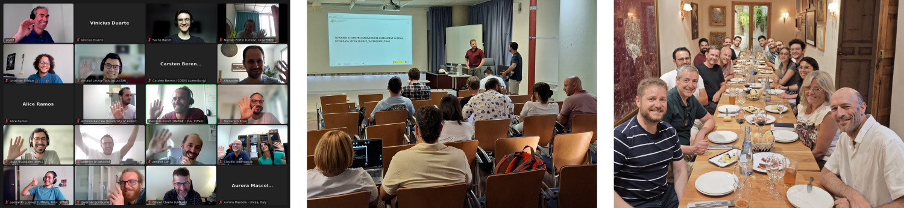
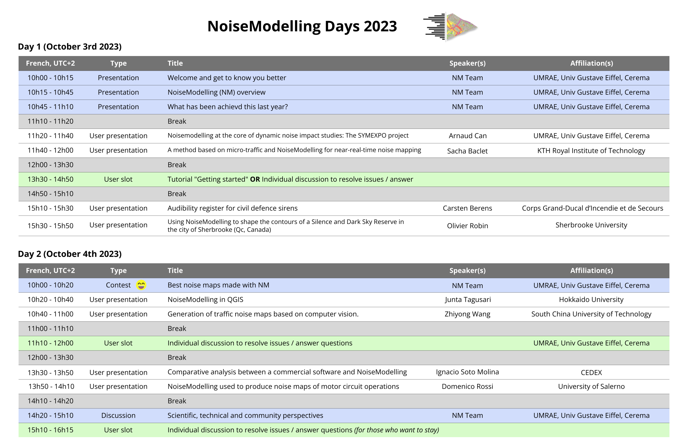
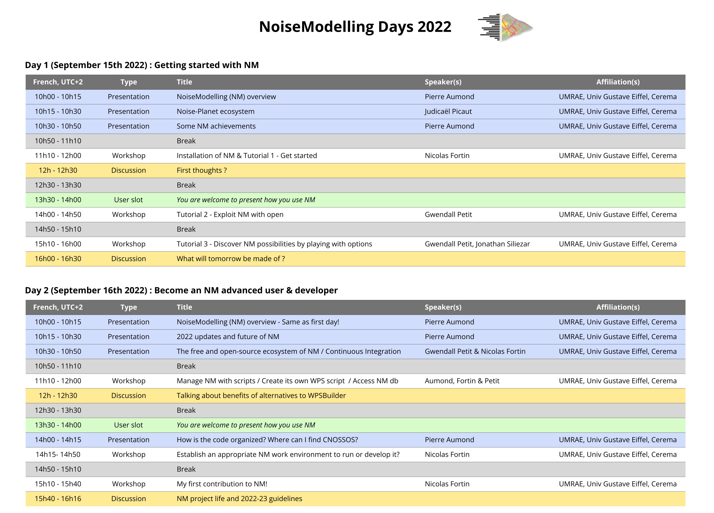
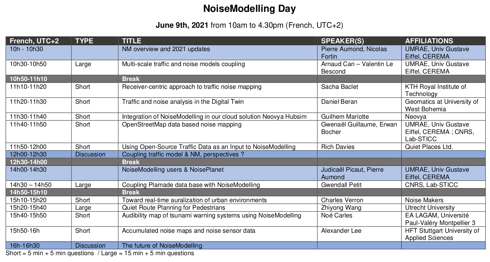

Former NoiseModelling Days
Former NoiseModelling Days
Below are listed the former NoiseModelling Days
2025 |
2024 |
2023 |
2022 |
2021
NoiseModelling Days 2025
🗓️ June 26-27, 2025 (Immediately following the Forum Acusticum 2025) | 🌍 Malaga, Spain 🇪🇸

Below we list (in chronological order) all of the presentations that were given, with associated resources where possible.
| Title | Speaker(s) | Affiliation(s) | Slides |
|---|---|---|---|
| Open Research in acoustics : The Noise-Planet & UMRAE experience | Judicaël Picaut | UMRAE, Univ Gustave Eiffel, Cerema | Read |
| Toward a collaborative room acoustics simulation software community | Maarten Hornikx | Eindhoven University of Technology | |
| Open source data & software for noise and vibration modelling in the Netherlands | Arnaud Kok, Rob Van Loon | National Institute for Public Health and the Environment | Read |
| Code_TYMPAN™ software for calculating industrial noise in the environment | Thibaud Thénint | EDF | |
| CNOSSOS EU & Open source | Pierre Aumond | UMRAE, Univ Gustave Eiffel, Cerema | Read |
| NoiseModelling - What's new? | Pierre Aumond | UMRAE, Univ Gustave Eiffel, Cerema | Read |
| LLM-based Multi-agent Framework for Traffic Noise Mapping | Zhiyong Wang, Yueying Zhang | South China University of Technology | |
| Towards a comprehensive noise assessment in Spain | Ignacio Soto Molina | Spanish ministry of the Environment | Read |
| Applying EU standards to noise mapping in emerging | Alexandra L. Montenegro | Università di Pisa, ARPAT | Read |
| Understanding the relation between traffic and noise in urban motorways using UAVs and low-cost sensors | Oriol Pascual Anglès, Jasso Espadaler Clapés | MobiLysis | Read |
| Data assimilation for dynamic urban noise mapping | Ndeye Maguette Diagne | UMRAE, Univ Gustave Eiffel, Cerema | Read |
| From road traffic volumes to individual vehicule representation | Yu Gao, Sacha Baclet | UMRAE, KTH Royal Institute of Technology | Read |
| Synthetic population & NoiseModelling | Valentin Le Bescond | UMRAE, Univ Gustave Eiffel, Cerema | Read |
| NoiseCapture vs NoiseModelling: a test case on Sherbrooke university campus | Léonor Rimani | CRASH - Université de Sherbrooke | Read |
NoiseModelling Days 2024
🗓️ August 25-29, 2024 | 🌍 Nantes, France 🇫🇷
In 2024, there was no specific NoiseModelling Days. But we took advantage of InterNoise 2024 and the fact that many users were present in Nantes to get together and talk about NoiseModelling, in particular over a very convivial lunch.
NoiseModelling Days 2023
🗓️ October 3-4, 2023 | 🌍 Webinar
🤝 One-on-One Support - USER SLOTS:
In addition to the traditionnal presentations, we have introduced "USER SLOTS" where our team members have offer personalized assistance for users projects. Whether attendees were facing technical challenges or seeking methodological guidance, the NoiseModelling team was here to help.
🏆 Noise Maps Contest:
We have introduced a "not so serious" contest to determine the "best" maps created using NoiseModelling. Users had the opportunity to participate both as contestants AND impartial jury members ;)
Program

NoiseModelling Days 2022
🗓️ September 15-16, 2022 | 🌍 Webinar
These two days were mainly focus on practice with a first day dedicated to new noisemodelling users (beginner to advanced), and a second day for expert NoiseModelling uses and code contributions.
Program

NoiseModelling Days 2021
🗓️ June 9th, 2021 | 🌍 Webinar
While in 2020, we organized the first NoiseModelling days in the form of a general presentation of the tool and tutorials, this year was focused on the users.
- The morning was be dedicated to the presentation of the 2021 novelties and to a series of user presentations in "flash" format (5 min + 3 min questions) or "classic" format (15 min + 5 min questions).
- In the afternoon, we continued user presentations and discuss future development needs.
The final goal off this event was to federate a community around NoiseModelling and to better meet the needs of users.
Program
